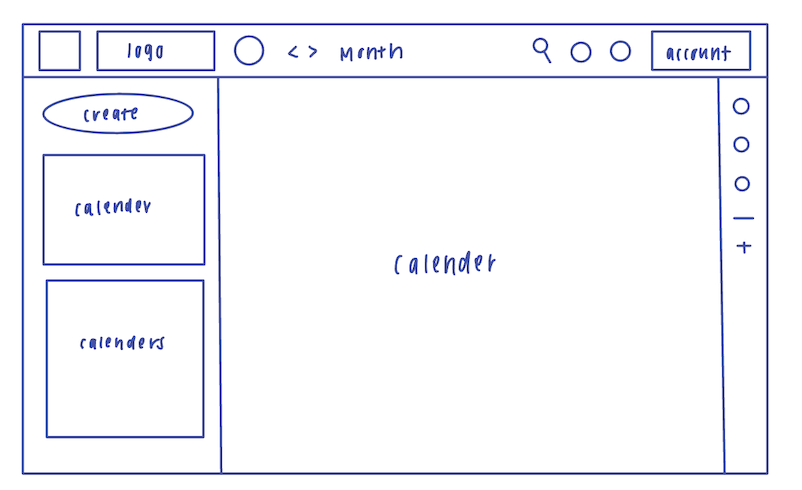
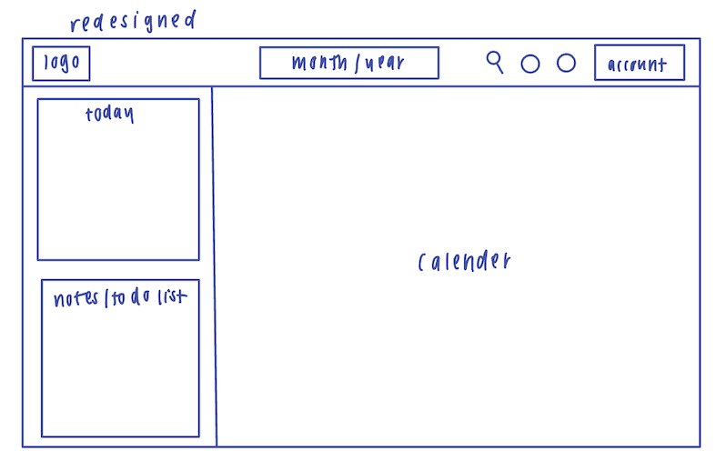

-
Using the favorite website you chose in homework 1, create a wireframe for one page of it using pen/paper, PowerPoint, or any your tool of choice. (use the 'img' tag!) Make sure to let us know what the name of your website is (Use the 'p' tag!)
google calendar
 -
Try to improve the website you've chosen, and create a redesigned wireframe of one page for the same website using the principles of visual hierarchy that you learned from the article.

-
What is the goal of the website? Who is it intended for? How does the design accomplish this? Write 2-3 sentences answering these questions. (Use the 'p' tag again!)
[The goal of this website is to help people schedule their daiily, weekly, and yearly evenets. This is intended for people who like to stay organized and keep track of important dates/tasks. The design allows individually to view their schedule from a daily, monthly, and yearly perspective along with various features like inviting other people to events, creating reminders, etc. ]
-
Write 2-3 sentences about what problems your redesign addressed, and how it solved them.
[I think people who use Google calendar also like to plan and it makes sense to have the daily schedule and a section for notes/to do list on the side of the page. This way the website functions as a planner and not just a calendar. I think limiting the larger view to only montly and yearly views makes most use of the space. ]
NOTE: Make sure to include the wireframe images in the website and don't just put it in your assets folder!
Your wireframes should look something like this: